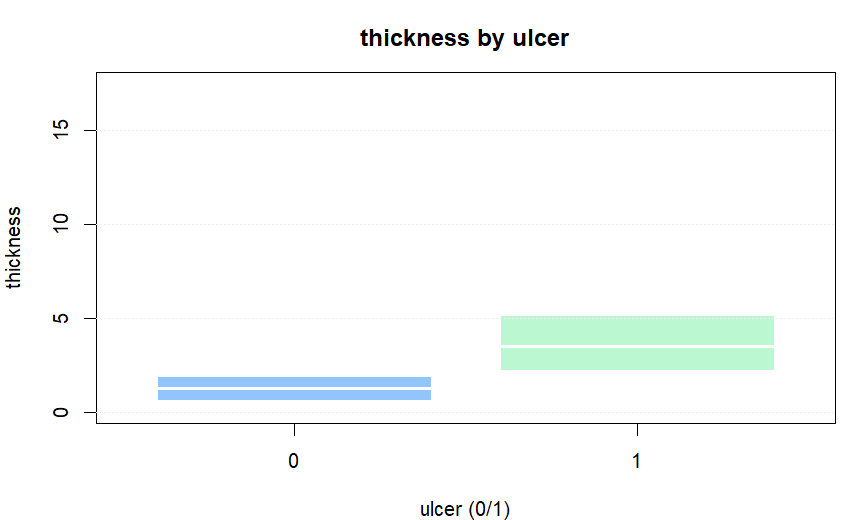

统计推断基础
本练习使用
MASS 包自带的 Melanoma 数据集，练习连续变量与分类变量的常用统计推断：置信区间、两组比较（Welch / Wilcoxon）、列联表、卡方检验与 Fisher 精确检验。
0. 载入 Melanoma
0.1 载入数据
Step 1 / 安装并加载 MASS
options(repos = c(CRAN = "https://mirrors.tuna.tsinghua.edu.cn/CRAN/"))
if (!requireNamespace("MASS", quietly = TRUE)) install.packages("MASS")
library(MASS)Step 2 / 载入数据并定义主表 mel
data(Melanoma)
mel = as.data.frame(Melanoma)
str(mel)结果：对象
mel 可用于后续推断练习。1. 连续变量：区间估计与两组比较
1.1 均值的置信区间
Step 1 / 肿瘤厚度（thickness）均值的 95% 置信区间
x = mel$thickness
t.test(x)$conf.int
# 同时输出均值与标准误
c(mean = mean(x), se = sd(x) / sqrt(length(x)))1.2 两组比较：Welch / Wilcoxon
分组变量：用
ulcer（0/1）分组比较 thickness。这是典型“两独立样本、连续结局”的比较场景。
Step 2 / 先看分组描述统计与箱线图
by(mel$thickness, mel$ulcer, summary)
boxplot(thickness ~ factor(ulcer), data = mel,
xlab = "ulcer (0/1)", ylab = "thickness",
main = "thickness by ulcer")Step 3 / Welch t 检验与 Wilcoxon 秩和检验
t.test(thickness ~ ulcer, data = mel) # Welch（默认）
wilcox.test(thickness ~ ulcer, data = mel) # 非参数
ulcer 分组的 thickness 箱线图（用于直观比较位置差异与离群点）。2. 分类变量：列联表与检验
2.1 频数、构成比与风险差
Step 4 / 列联表：性别（sex）× 溃疡（ulcer）
tb = table(ulcer = mel$ulcer, sex = mel$sex)
tb
# 构成比：行百分比（每个 ulcer 组内部）
round(prop.table(tb, 1) * 100, 1)Step 5 / 风险差（示例）：ulcer=1 在不同性别中的比例差
p_male = mean(mel$ulcer[mel$sex == 0] == 1)
p_fem = mean(mel$ulcer[mel$sex == 1] == 1)
c(p_male = p_male, p_female = p_fem, diff = p_male - p_fem)2.2 卡方检验与 Fisher
Step 6 / 卡方检验（含期望频数）
chi = chisq.test(tb)
chi
chi$expectedStep 7 / Fisher 精确检验（2×2 表）
fisher.test(tb)
注意：卡方检验依赖“期望频数”条件；当期望频数过小时，优先用 Fisher 精确检验或合并类别后再检验。
3. 实验内容（提交要求）
提交要求：按下列条目给出相应输出与简要说明。
A. 区间估计
- 均值 CI：提交
t.test(mel$thickness)$conf.int的输出，并用一句话解释“95% 置信区间”在本实验中的含义。
B. 两组比较
- Welch 与 Wilcoxon：提交两种检验的
p值与结论（是否拒绝原假设），并说明你更倾向报告哪一个（1 句话）。 - 图：提交图 1（或自己生成的同类图）截图。
C. 列联表检验
- 列联表：提交
table(mel$ulcer, mel$sex)与行百分比。 - 检验：提交
chisq.test与fisher.test的结果，并用一句话解释两者的适用条件差异。